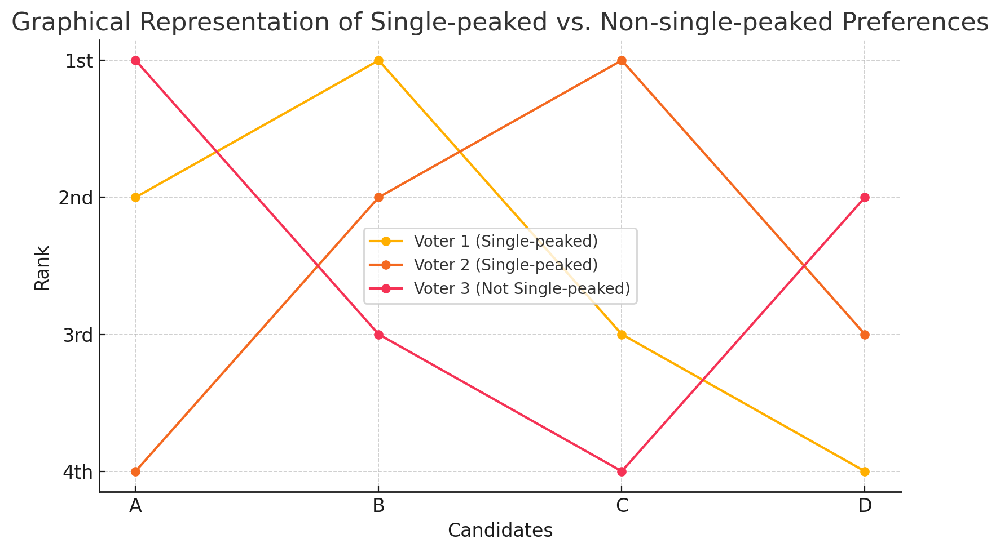

📹 Watch the introductory video here
Pairwise Majority Rule and the Condorcet Criterion
1. Characterizing Majority Rule
1.1 Justification in the Two‑Alternative Case
When there are only two alternatives, A and B, “simple majority rule” is often employed. In fact, majority rule is the unique decision rule that satisfies all three properties below; this is known as May’s Theorem.
- Neutrality
- Intuitive definition: the rule is not biased toward any particular candidate label.
-
Example with A and B: if A wins under some profile of ballots, then swapping the labels of A and B in that same profile must make B win.
-
Anonymity
- Intuitive definition: the outcome depends only on the multiset of votes, not on who cast them.
-
Example with A and B: permuting voters (shuffling their IDs) must not change the result.
-
Positive Responsiveness
- Intuitive definition: if candidate X is at least tied, and one ballot changes in a way that is strictly more favorable to X, then X must strictly win.
- Example with A and B:
- If A and B are tied and one voter changes a tie or a B‑over‑A ballot to A‑over‑B, then A must become the winner.
- If A is already ahead of B and an additional vote favorable to A appears, A must still win.
May’s Theorem: simple majority rule is the only decision rule for two alternatives that satisfies Neutrality, Anonymity, and Positive Responsiveness simultaneously.
2. The Condorcet Criterion
2.1 Basic Idea
If majority rule is desirable for two alternatives, it is natural to extend that intuition:
- Condorcet Criterion
If some alternative \(X\) defeats every other alternative in pairwise majority contests, society should choose \(X\).
Such an alternative is called a Condorcet winner or pairwise majority winner.
2.2 When a Pairwise Winner Does Not Exist
Cycles can occur (A beats B, B beats C, yet C beats A). In such cases no pairwise majority winner exists, and the Condorcet criterion yields no social choice—its well‑known weakness.
2.3 The Borda Rule Violates the Condorcet Criterion
Even the Borda rule (a scoring rule where voters rank candidates and higher ranks receive more points) can fail to select a Condorcet winner. A compact numerical example illustrates this.
Concrete Example (3 Candidates, 5 Voters)
| # Voters | 1st | 2nd | 3rd |
|---|---|---|---|
| 3 | B | C | A |
| 2 | C | A | B |
Pairwise Majority Results
- B vs A : B wins 3–2
- B vs C : B wins 3–2
- C vs A : C wins 5–0
→ B is the Condorcet winner.
Borda Scores (with 3 candidates: 1st = 2 pts, 2nd = 1 pt, 3rd = 0 pts)
| Candidate | Score Calculation | Total |
|---|---|---|
| B | 3×2 + 2×0 = 6 | 6 |
| C | 3×1 + 2×2 = 7 | 7 |
| A | 3×0 + 2×1 = 2 | 2 |
→ The Borda rule selects C as the winner.
Therefore the Borda rule violates the Condorcet criterion: it can pick a different winner even when a Condorcet winner exists.
3. Single‑Peaked Environments
3.1 What Is Single‑Peakedness?
Candidates can be placed on a one‑dimensional line, and each voter’s preferences strictly decline as the candidate moves away from that voter’s “peak” point. Such preference profiles are single‑peaked.
3.2 Everyday Examples
- Satisfies single‑peakedness: choosing a restaurant location along a straight street. Each person most prefers the spot closest to home/work; desirability falls monotonically as distance increases.
- Does not satisfy single‑peakedness: ice‑cream flavors, where sweetness, fat content, fruit, etc. form multiple dimensions; ranking flavors on one axis need not produce a single peak.
3.3 Visual Intuition
Think of each voter’s utility curve as one mountain: the peak is the top, and utility falls smoothly on either side. No voter has multiple mountains.
Single-peaked vs. Non-single-peaked Preferences

| Voter | 1st | 2nd | 3rd | 4th |
|---|---|---|---|---|
| Voter 1 (Single-peaked) | B | A | C | D |
| Voter 2 (Single-peaked) | C | B | D | A |
| Voter 3 (Not Single-peaked) | A | D | B | C |
- Voter 1 and Voter 2 have single-peaked preferences.
- Voter 3 has non-single-peaked preferences.
3.4 Median Voter and the Pairwise Winner
In a single‑peaked setting, the median voter is defined by ordering all peak points and taking the middle one.
- Intuitive argument: a candidate located at the median voter’s peak (call it X) defeats any alternative farther left (hated by the right half) and any alternative farther right (hated by the left half).
- Thus X is always the Condorcet winner. Single‑peakedness guarantees the existence of a Condorcet winner.
3.5 Difference from Borda Scores
Even under single‑peaked preferences, the winner chosen by a scoring rule (e.g., Borda) need not coincide with the Condorcet winner. The two concepts remain distinct.
Summary
- May’s Theorem: For two alternatives, simple majority rule uniquely satisfies Neutrality, Anonymity, and Positive Responsiveness.
- Condorcet Criterion: If a pairwise majority winner exists, choose it; cycles may leave the outcome undefined.
- Scoring rules (e.g., Borda) can violate the Condorcet criterion, as shown by the 3‑candidate, 5‑voter example.
- Single‑peaked preferences ensure a Condorcet winner exists—the median voter’s peak—yet that winner can still differ from a Borda winner.